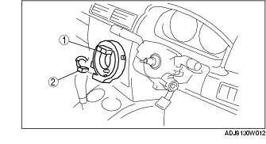

Clock spring removal/installation
1. Disconnect the negative battery cable.
2. Remove the driver-side air bag module. (See DRIVER-SIDE AIR BAG MODULE REMOVAL/INSTALLATION.)
3. Remove the steering wheel. (See STEERING WHEEL AND COLUMN REMOVAL/INSTALLATION.)
4. Remove the column cover. (See COLUMN COVER REMOVAL/INSTALLATION.)
5. Remove in the order indicated in the table.

|
1
|
Clock spring
(See Clock Spring Removal Note.)
|
|
2
|
Connector
|
6. Install in the reverse order of removal.
7. Verify that the air bag system warning light illuminates for approx. 3 s and goes out.
- • If the air bag system warning light does not operate, refer to the on-board diagnostic system (air bag system) and perform inspection of the system.
Clock Spring Removal Note
1. Remove the combination switch wire harness from the clock spring.

2. Remove the clock spring from the combination switch tab as shown in the figure.

Clock Spring Installation Note
- • If the clock spring is not adjusted, the spring wire in the clock spring will break due to overtension when the steering wheel is turned. Always adjust the clock spring after installing it.
1. Adjust the clock spring after installing it. (See CLOCK SPRING ADJUSTMENT.)